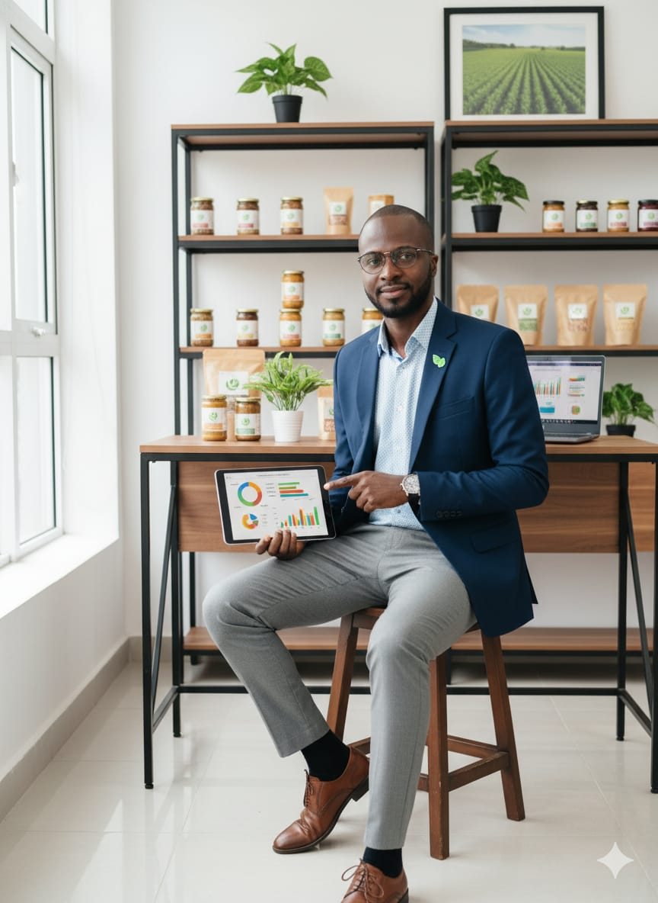

Bienvenue chez CHAK-VERT-BIO
CHAK VERT BIO, votre satisfaction, notre mission. Optez pour la qualité de nos services.
Découvrez nos servicesÀ propos de CHAK-VERT-BIO
CHAK-VERT-BIO est une entreprise agricole spécialisée dans la promotion des produits bios . Depuis sa création, nous nous engageons à offrir des produits sains, frais et respectueux de l’environnement.
Notre mission est de promouvoir les differentes techniques de production; de sensibiliser et d'accompagner les producteurs locaux dans la proction bio, que ce soit dans le domaine de l'agriculture, l'élevage, la pêche et la transformation alimentaire afin de proposer aux produits sains. Grâce à des méthodes biologiques et respectueuses de la nature, nous transformons nos produits pour vous proposer le meilleur de la ferme à votre assiette.
Nos Domaines


Autres Activités
Communication événementielle
Le PDG
Nom du PDG : Chakirou Bolarinwa OSSE
Notre PDG passionné du développement de l'espace verte, met en valeur les produits bio et sains.
Passer une commande
Localisation de l'entreprise
Où nous trouver ?
Nous sommes situés à Porto-Novo, quartier Danto, les palmiers.